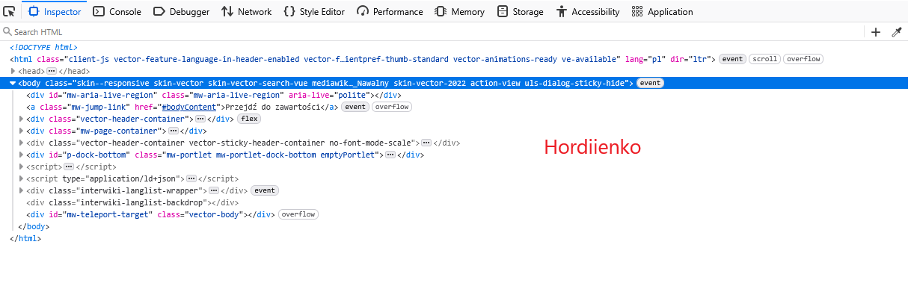
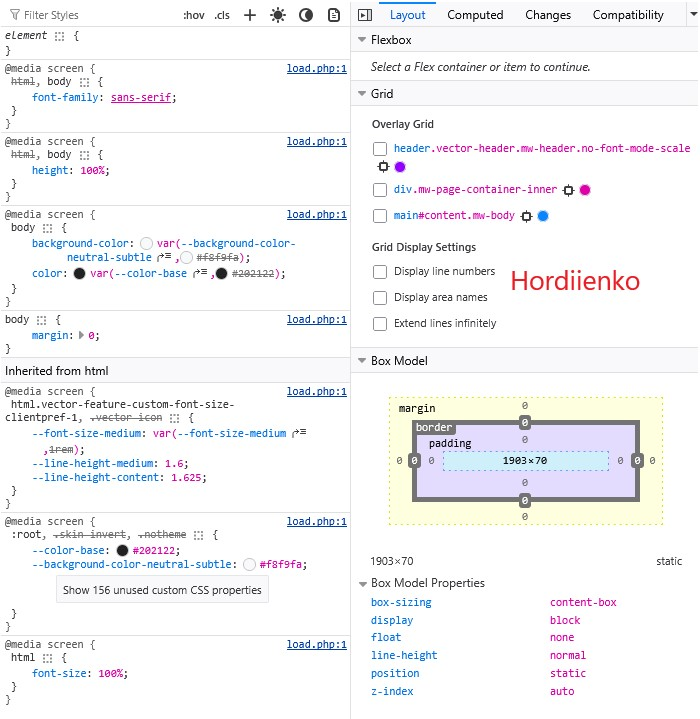

Do czego służy Pasek dewelopera, kiedy jest gotowy do użycia, wymień zakładki Paska
developera.
To rozbudowane środowisko, które w 2026 roku staje się "rozszerzeniem IDE", oferując AI, analizę
pamięci, zaawansowane dławienie sieci i ścisłą integrację z kodem źródłowym. Pozwala szybciej
tworzyć lepsze witryny. Dokładny opis patrz Nowe możliwości Web Developer Tools.
1.Elements / Inspector ← (to ten Inspektor opis patrz poniżej)
2.Console (błędy i logi JavaScript)
3.Network (ruch sieciowy)
4.Sources (debugowanie kodu)
5.Application / Storage (cookies, localStorage itd.)
Do czego służy Inspektor Elements, w jakiej zakładce się znajduje, do czego służy?
Inspektor Elements [zakładka] to podstawowe narzędzie do edycji wbudowane w
przeglądarkę np. Firefox.
1.podglądu struktury HTML strony
2.edycji HTML i CSS „na żywo”
3.sprawdzania stylów (kolory, marginesy, fonty)
4.Sources (debugowanie kodu)

